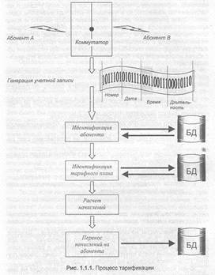
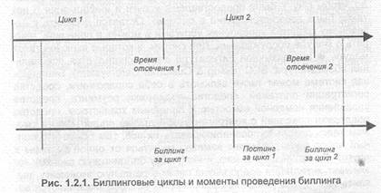
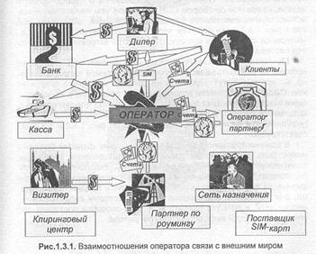
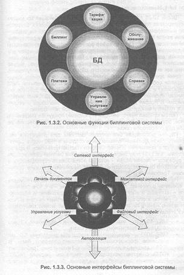
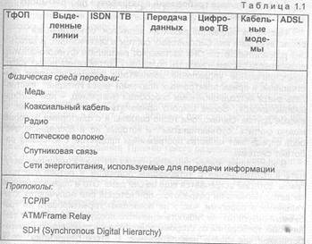

Что такое биллинговые системы

«Статистика знает все». Следуя этому сакраментальному выражению можно было бы ожидать, что, открыв на букве «Б» справочники, энциклопедии, толковые словари, пылящиеся на полках библиотек, можно удовлетворить свое любопытство и узнать, наконец, что же такое биллинг. Увы, автор потерпел фиаско после того, как попробовал предпринять такое изыскание. Ни в одном известном ему российском издании, включая специальные технические, соответствующих словарных статей не оказалось. Удивляться не приходится. Практика расчетов за услуги, существовавшая долгие годы в телекоммуникациях (и не только), не предполагала применения механизмов расчетов сколько-нибудь отличающихся по сложности от гвоздя, на который можно было бы накалывать квитанции с отметками о внесении абонентской платы трудящимися. Не производилось ни учета объема потребления существующих услуг, ни стимулирования роста этого потребления, ни предложения новых. Соответственно, не было и необходимости в построении отношений с абонентами и в выпуске для них каких-либо документов. Та самая статистика действительно знала или заменяла собой все: умножив количество установленных телефонных пар, взятое из статистического справочника, на размер абонентской платы (взятый из того же справочника) можно было рассчитать денежные поступления на годы вперед. Это привело к тому, что слово «биллинг» у неискушенного большинства вызывало лишь тягостные ассоциации с необходимостью расчета за съеденное и выпитое в ресторане (да и тот должен был находиться за границей).
Удивительно совсем другое. С момента появления первой функционально законченной российской биллинговой системы («Петер-Сервис», 1992 г., оператор «Delta Telecom») прошло ровно 10 лет — срок совсем незначительный по меркам прошлого. Однако, уже в декабре 2000 в Москве состоялась выставка «Биллинг телекоммуникаций 2000», что безотносительно к количеству ее участников, заключенным сделкам и другим пунктам интереса статистиков примечательно само по себе. Так же как и состоявшаяся в свое время первая специализированная выставка по мобильным системам связи, такое событие знаменует собой завершение формирования в стране (в мире это уже произошло) нового направления в экономике, со всеми признаками, свойственными любой сложившейся отрасли промышленного производства: своим кругом занятых в ней профессионалов, поставщиками и потребителями, финансовыми потоками, нормативной базой, специальными изданиями (которые, кстати, тоже представлены на выставках), public relations и т.д. И совокупностью решаемых задач. И набором понятий. И терминологией.
Вероятно, для каждого специалиста, работающего в телекоммуникациях, смысл того, что связано со словом «биллинг» является интуитивно понятным. Тем не менее, опросные листы, касающиеся функциональности и параметров биллинговых систем, которые операторы связи присылают разработчикам, занимают не одну страницу и содержат сотни вопросов. Двух одинаковых вопросников, составленных разными операторами, не существует. Это говорит о том, что каждый оператор, даже при наличии нормативных документов, появившихся в последнее время, рассматривает биллинговую систему не как стандартную неизбежность, к которой следует относиться по принципу «чем бы дитя ни тешилось...», а как средство достижения своих собственных целей в рамках своей собственной стратегии развития, и это — естественно. С другой стороны, многообразие целей и неоднозначность стратегий приводят к тому, что подчас в биллинговых системах начинают видеть некую универсальную панацею, которая призвана решать чуть ли не все задачи, стоящие перед оператором, или, по крайней мере, автоматизировать их решение (управление персоналом, например).
Если принять во внимание большое количество стандартов или видов (сетей) связи, существующих в настоящее время (фиксированная, спутниковая, различные типы мобильной связи), огромное количество предоставляемых услуг, постоянное рождение новых операторов связи, среди которых есть и ведомственные, и транзитные, то вопрос о том, каким содержанием в действительности наполняется слово «биллинг», окажется далеко не праздным. И дело здесь не в формальных дефинициях, хотя без них тоже не обойтись. Сейчас в мире проходят десятки выставок, посвященных биллингу в телекоммуникациях. Естественно, что такие события становятся одновременно и временем подведения итогов, и временем уточнения ориентиров, а их количество свидетельствует об актуальности темы. Именно поэтому и интересно попытаться сейчас посмотреть на то, что было сделано и дать ответ на вопросы: что есть биллинговая система? каковы ее назначение и функции? «Сосуд она, в котором пустота, или огонь, хранящийся в сосуде?»
Не секрет, что многие явления в экономике могут быть описаны в терминах биологии. В последней же существует понятие трофической цепи, такая цепь — это взаимоотношения между организмами, через которые в экосистеме происходит трансформация вещества и энергии. Если попытаться рассматривать оператора связи как подобный живой организм, то можно предположить, что биллинговая система и является тем самым узлом, элементом цепи, чара который происходит обмен «веществом» (информацией) и «энергией» (деньгами) с другими ее участниками. То есть именно через биллинговую систему происходит интеграция оператора связи в экономическую «экосистему» в целом и именно биллинговые системы являются элементами, превращающими телекоммуникации в реальный сектор экономики. Использованная аналогия позволяет лучше оценить роль главного «героя» данной книги (и с точки зрения, приведенной в эпиграфе, тоже): это не просто механизм автоматизации и облегчения деятельности персонала оператора, а важнейший элемент его жизнедеятельности и сохранения его как вида. Свою задачу автор видел не в том, чтобы убедить читателей в этом тезисе — он, скорее всего, понятен любому специалисту, — а в том, чтобы систематизировать доступную информацию с этих позиций.
Именно систематизировать, избегая в то же время академичности изложения, потому что данная книга — не учебник по биллингу и не сборник рецептов под рубрикой «маленькие хитрости»; учить — в классическом понимании этого слова — операторов биллингу может быть также бессмысленно, как почтенную матрону вести домашнее хозяйство. Работать с клиентами и жарить котлеты каждый учится, следуя собственным представлениям о процессе, и получает комментарии по поводу результата в свой собственный адрес.
Отрасль экономики, связанная с биллинговыми системами, является, пожалуй, наиболее ярким примером «материализации духов», в котором виртуальный продукт — программа — начинает влиять на жизни миллионов людей и становится, в полном соответствии с классиками, материальной силой. С этой точки зрения биллинг является разновидностью массового обслуживания, не столько в смысле строгой теории, сколько в смысле подходов к решению задач, прямо или косвенно опирающихся на статистику или на то, что ее заменяет — соображения «здравого смысла». Многое из того, что превратилось в программный код, создавалось подобным образом, но задним числом хотелось бы понять, почему все-таки сделано так, а не иначе.
К настоящему времени область биллинга стала почти такой же безбрежной, как и область телекоммуникаций в целом. Рамки предлагаемого издания не позволяют, к сожалению, затронуть все аспекты биллинга в телекоммуникациях, как того хотелось бы. В книге отражены лишь те проблемы, которые показались наиболее важными и с которыми пишущий эти строки знаком немного ближе, чем с другими. В этой связи автор заранее извиняется перед теми читателями, которые, возможно, не найдут здесь ответа на некоторые свои вопросы.
Поскольку в русскоязычной литературе на тему биллинга преобладают публикации рекламного характера, и ощущается определенный недостаток публикаций аналитических, большую часть фактических сведений приходится получать из многочисленной англоязычной литературы. Показалось полезным сопроводить книгу не большим глоссарием, в котором собраны некоторые термины, относящиеся к биллингу, и даны как русские, так и английские их варианты. Возможно, этот глоссарий окажется наиболее интересным разделом для тех читателей, которые, не удовлетворившись изложенным, рискнут предпринять самостоятельное исследование в данной области.
Автор также будет признателен всем, кто сможет прислать замечания и предложения, касающиеся данного издания с тем, чтобы их можно было бы учесть в последующих публикациях. Следует сразу отметить, что обилие графического материала к достоинствам труда, который читатель держит в руках, не относится. При всей любви к изящным искусствам автор, увы, рисовать не умеет, но обещает в дальнейшем исправиться.
К сказанному хотелось бы добавить слова благодарности Александру Петровичу Гармашову и Игорю Львовичу Горькову за благожелательный интерес, давно проявленный ими к идее написания подобной книги. Без такого интереса она вряд ли увидела бы свет.
1. Биллинговые системы и Оператор связи
«...Пришлось, правда, вознаградить
за такую услугу. Остался без денег (но об этом после) ...»
Из письма отца Федора жене своей, Катерине Алексеевне.
Телекоммуникации — не единственная отрасль, в которой предоставление конкурентоспособных услуг и получение денег за эти услуги являются центральными задачами компаний, концентрирующими в себе практически весь смысл их деятельности. Но ни в одной другой сфере не тратятся столь большие средства, усилия и время для того, чтобы приобрести уверенность в том, что клиент получит счет в таком виде, в каком он его хочет получить, и в то время, какое он предпочтет для этого. При всей иронии, с которой может быть встречено это утверждение [1.1], существует весьма веская причина для того, чтобы оно было правдой. Несмотря на то, что деятельность операторов приводит к ощутимым результатам, измеряющимися в миллионах состоявшихся вызовов, сотнях сделок, совершенных при помощи средств связи, миллиардах долларов, переводимых «по телеграфу», для большинства клиентов только счет является осязаемым доказательством того, что услуг действительно были получены, что и определяет его значимость для обеих сторон.
Однако, роль биллинга выходит за пределы элементарного доказательства факта предоставления услуг. Сейчас, при растущей конкуренции, когда одна лишь устойчивая работа сети и традиционные услуги становятся настолько обыденным явлением (в основном — на Западе), что просто перестают замечаться, свой подход к обслуживанию клиентов и биллингу, как составной части этого процесса, становится для большинства операторов возможностью выделиться на общем фоне. «Выделиться», в частности, подразумевает в себе способность выставлять понятные и не содержащие ошибок счета за услуги связи, оперативно предоставлять эти самые услуги и гибко менять ценовую политику, создавать и хранить модели потребления различными категориями пользователей, реагировать на изменения спроса и недовольство клиентов со всей возможной быстротой. Именно с этих позиций мы и попытаемся посмотреть на биллинговые системы в телекоммуникациях.
1.1. С чего начинается биллинг
Прежде, чем приступить к дальнейшему изложению, попытаемся уточнить понятия, с которыми нам придется иметь дело. Те формулировки, которые можно будет обнаружить далее, не претендуют на универсальность и окончательность, и служат лишь для логической организации текста в рамках данной книги.
В соответствии с законодательными актами многих государств, любая компания, вступающая в какие-либо отношения с клиентами (как физическими, так и юридическими лицами), предоставляющая им услуги в пределах этих отношений и получающая с них за эти услуги деньги, обязана в установленные сроки информировать клиентов о том, какие услуги были предоставлены и в каком объеме, а также о том, во что эти услуги им обошлись. Такая информация не обходима самим пользователям для того, чтобы контролировать свои расходы и потребление услуг, и налоговым органам для расчета, в частности, налога на добавленную стоимость. В России в области телекоммуникаций соответствующие нормы установлены документом [1.2].
Понятно, что речь, вообще говоря, идет о счете — этот документ может иметь разные названия — который клиент должен рано или поздно получить. Будем называть биллингом процесс (в контексте книги — автоматизированный) подготовки и выпуска таких счетов для клиентов. В английском языке подобные документы могут иметь название bill или invoice, но лишь первое их этих слов, точнее — его причастная форма, породило соответствующий русский термин- кальку. Из данного выше определения непосредственно вытекает, что при биллинге должны использоваться персональные сведения о клиентах, которые необходимо регистрировать и хранить в системе, выполняющей соответствующие функции (определение же биллинговой системы мы дадим позднее). Наверное, было бы банальным упоминать, что всю требующуюся для работы информацию целесообразно хранить в базе данных — именно так сейчас и поступают, но такой подход использовался не всегда.
Отрезок времени, за который производится учет информации, подлежащей отображению в счете, будем называть шиллинговым циклом. Слово «цикл» заставляет предположить, что операция выставления счетов может или должна производиться периодически и, действительно, документ [1.2] оговаривает и это. Другой нормативный документ [1.3] устанавливает разновидности биллинговых циклов. Обратим внимание на то, что мы не включили в понятие биллинга процедуру расчета стоимости услуг, как таковых, в отличие от того, как это сделано в [1.4]. Добавим также, что и не любой цикл операций, выполняемых биллинговой системой, уместно, по нашему мнению, называть биллингом. Сравнение с другими определениями [1.5 — 1.7] показывает, что попытка определить даже начальные понятия приводит к необходимости уточнить набор функций, который должен быть свойственен некоей условно-стандартной биллинговой системе.
Вопрос, вынесенный в заголовок, предполагает, вообще говоря, линейное описание объекта от слова begin до слова end. Однако работа сложных систем редко позволяет так сделать. Поэтому, несмотря общее стремление рассмотреть все последовательно от начала до конца, нам придется прибегать к рекурсиям, а также говорить не только о функциях, вытекающих из названия системы буквально, но и о других, смежных проблемах, вытекающих из выполняемых технологических операций.
Оправдана ли вообще попытка «линейной» интерпретации такого многогранного (мы увидим это) явления, как биллинг в телекоммуникациях? С точки зрения полной спецификации — нет, при стремлении понять его как процесс — да. Пока же можно задать другой вопрос выпуском счетов занимается практически любая организация, имеющая бухгалтерию. Каждый из этих счетов можно назвать гордым словом «bill» и по отношению к любому из них справедливо почти все сказанное выше, но это еще не объясняет того исключительного внимания, которое уделяют биллингу операторы связи. Необходимо произнести еще одно слово...
Если, вслед за [1.7], говорить о биллинговой системе как, с одной стороны, «основе деятельности любой компании-оператора», а с другой — только как о механизме, который «...автоматизирует трудовые процессы...», то непонятно за счет чего оператор связи живет и выживает. Основой жизнеспособности любой коммерческой организации является ее рентабельность, прямо связанная с доходами, которые, в свою очередь, определяются объемом и стоимостью произведенного продукта. Компания, которая оказывается не в состоянии определять эти параметры, — мертва. Для оператора, продающего услуги связи, учет потребления/продажи таких услуг является задачей с абсолютным приоритетом. Существует даже специальный термин «revenue assurance», под которым понимается комплекс мероприятий, призванных обеспечить поступление запланированных доходов в казну организации. В телекоммуникациях частью этих мероприятий является сбор и обработка информации о сделанных вызовах, о проведенных сеансах связи, о трафике, пропущенном по каналам связи и пр. Решение данной задачи не имеет прямого отношения к подготовке и выпуску счетов, т.е. биллингу как таковому (хотя многие их отождествляют), но отсутствие информации о потреблении делает все дальнейшие шаги бессмысленными: не за что выставлять счет.
Сделаем элементарные оценки. Поделив общее количество абонентов (-4,5 107) в России на общее количество операторов телефонной (в т.ч. и мобильной) связи (-3.102) получим, что среднее количество абонентов у оператора имеет порядок -105. Известно, что средний абонент совершает около 7 — 10 вызовов в день, что дает оператору -106 ежедневных или -107 ежемесячных вызовов. О каком-либо «повышении производительности» и «облегчении труда» говорить, имея в виду эти цифры, бессмысленно. Попытка учесть и рассчитать стоимость такого количества вызовов, не имея для этого автоматических средств — нонсенс. Очевидно, что работа с информацией подобного рода является самостоятельной технической задачей; вопрос лишь в том, как она соотносится с биллингом.
Включим в упомянутую самостоятельную задачу все операции, связанные с загрузкой, обработкой и передачей на последующее хранение сведений о вызовах и будем называть ее тарификацией [1.8], а сами сведения, зарегистрированные коммутатором при совершении вызова, — учетными записями (в англоязычной литературе используется аббревиатура CDR, Call Detail Record, к которой мы также будем прибегать для краткости). Функции обработки, подразумевают, как правило, атрибутирование вызова — т.е. нахождение абонента, его совершившего, вычисление продолжительности вызова (в заданных единицах), нахождение его стоимости и «перенос» этой стоимости на абонента. Атрибутирование и вычисление стоимости (отсюда — и термин «тарификация») являются наиболее существенными элементами данной задачи, поскольку выполнение именно этих элементов позволяет установить сумму, причитающуюся оператору, и источник ее получения; количество же записей, подлежащих ежедневной обработке дает представление о ее сложности.
Обеспечение сохранности CDR на пути к тарификации является одним из элементов revenue assurance и предметом постоянной заботы любого оператора, поскольку потерянные CDR — потерянные деньги. Не будем забывать, что оператор продает «эфир», по сути дела — воздух (в англоязычной литературе даже термин используется очень впечатляющий: «air»), поэтом сами CDR и последующий счет, в который они включаются, являются единственными «осязаемыми» свидетельствами того, что потребителю было предоставлено нечто, имеющее материальную стоимость. Однако эта сторона дела носит, скорее организационный характер и ее не относят ни к функциям тарификации, ни к функциям биллинга. Задачей тарификации можно считать корректную обработку всех CDR, поданных на ее вход, но не поиск потерянных, хотя в ряде случаев, на процедуру тарификации возлагается, например, задача проверки правильности нумерации обрабатываемых файлов с учетными записями с тем, чтобы по пропущенным номерам, если таковые обнаружены, отыскать недостающее. Тем не менее, многие эксперты в части CDR склонны рассматривать задачу revenue assurance именно в контексте биллинга, поскольку связанные с этим потери могут достигать 3-15% получаемого дохода [1.9], а причины потери данных могут быть связаны как с некорректной настройкой коммутатора, так и с некорректной настройкой биллинговой системы (неправильное округление, невозможность атрибутировать вызов, неверные ссылки на тарифные плана или их отсутствие и пр.). Детальный анализ проблемы revenue assurance мог бы занять немалое количество страниц и несколько выходит за рамки данного издания.
Задачу тарификации можно было бы рассматривать совершенно независимо от биллинга, если бы речь шла только о валовом исчислении предоставленных услуг, т.е. если бы требовалось знать только их общий объем и общую стоимость (и тогда биллинг в телекоммуникациях ничем бы не отличался от любой рутинной процедуры выписки счетов, где бы она ни происходила). До некоторой степени похожие ситуации встречаются при взаиморасчетах операторов друг с другом (Interconnect) и об этом будет подробнее упомянуто ниже. Но обслуживание клиентов производится адресно, адресно выставляется и счет и также адресно стоимость конкретной услуги должна быть «привязана» к клиенту, ее получившему. Звеном, которое логически связывает процессы тарификации и биллинга является определение потребителя услуги, при котором используется та же информация, что и при выпуске счетов. Именно эта связка и заставляет реализовывать эти функции в рамках единой биллонговой системы, хотя, отметим еще раз, тарификация — это еще не биллинг, а биллинг — это уже не тарификация. Они отнюдь не совпадают.
Еще одним существенным моментом является, существующая помимо логической, временная связь между процессами тарификации и биллинга. Выпуск счетов, являясь трудоемкой и ресурсоемкой операцией, не может выполняться слишком часто и, как правило, проводится в установленные законом сроки (предположим — раз в месяц). Тарификацию же, наоборот, в силу многих причин, целесообразно выполнять в реальном или квазиреальном масштабе времени, хотя она также требует немалых вычислительных ресурсов. К числу упомянутых причин можно отнести необходимость оперативного управления услугами абонентов, fraud-контроль, обеспечение полноты учета CDR (чем быстрее обрабатываются файлы, тем больше шансов вовремя найти утерянный) и пр. При этом возникает необходимость сохранения информации об обработанных вызовах как минимум на период времени с момента тарификации до момента биллинга. В подавляющем большинстве биллинговых систем для этих целей в модели данных предусмотрены специальные таблицы, в которых, впрочем, информация может храниться и дольше, и которые накладывают весьма характерный отпечаток на базы данных операторов связи. В тоже время, известны и другие решения, при которых тарификации подвергается весь накопленный к текущему моменту объем вызовов (и это повторяется каждые сутки) или месячный объем вызовов сразу непосредственно перед проведением биллинга. Последнее может быть выгодно с точки зрения экономии ресурсов, но рискованно с точки зрения обнаружения и исправления возможных ошибок.
При проведении биллинга для каждого абонента производится просмотр CDR, еще не учтенных ни в одном биллинговом цикле. Стоимости вызовов, рассчитанные ранее процедурой тарификации, суммируются и указываются в соответствующей строке счета. Каждая запись о вызове получает при биллинге отметку во избежание ее повторного учета, а хранение таких записей в течение заданного времени позволяет иметь удобный доступ к информации о вызовах и при необходимости выдавать абонентам справки. Здесь молчаливо предполагается, что процесс регистрации абонента в системе предваряет вызов, совершенный абонентом; это позволяет избежать на время обсуждения вопроса о том, что делать с учетными записями о тех вызовах, которые совершил незарегистрированный абонент.
Диаграмма, условно иллюстрирующая один из возможных сценариев тарификации в биллинговой системе, представлена на рис. 1.1.1.
Безусловно, тарификация не является хронологически самым первым программным модулем, запускаемым при инсталляции новой биллинговой системы, но она с неизбежностью предшествует биллингу. Тарификация, может работать отдельно от биллинга, как независимый и осмысленный процесс; обратное же, по крайней мере, в телекоммуникациях, несправедливо.
1.2. Чем заканчивается биллинг?
Хочется сказать, что биллинг бессмертен, и пожелать операторам долгой и счастливой совместной жизни вместе с разработчиками биллинговых систем. Речь здесь, конечно же, не идет о безвременной кончине биллинговой системы или (боже упаси!) оператора.

Правомочна ли вообще постановка такого вопроса и что имеется ввиду при ответе: «да»? Поскольку мы употребили выше слово «цикл», необходимо хоть как-то определить границы циклического процесса. И если за его начало можно условно принять начало накопления информации о потреблении услуг (или, если угодно, о начислениях на абонента), то в отношении антипода возможны варианты. Сразу оговоримся: мы не обсуждаем выбор начала и конца временного периода, за который производится обработка информации, считая их априорно установленными. Нас сейчас интересуют моменты начала и завершения процесса. Можно предложить рассмотреть следующие способы определения признака окончания обработки информации для биллингового цикла и выбрать «правильный» ответ:
• учет в биллинговом цикле самого последнего начисления за период;
• завершение формирования и печати самого последнего счета;
• внесение в книгу продаж самой последней записи за период;
• доставка последнего не доставленного счета;
• оплата последнего неоплаченного счета, сформированного в цикле;
• отключение последнего абонента, не оплатившего счет вовремя;
• повторное подключение последнего абонента после оплаты им просроченного счета;
• начисление пени за последний неоплаченный счет;
• учет последнего пени в следующем биллинговом цикле;
• оплата последнего пени по счету, выставленному в следующем биллинговом цикле...
• считать операции данного биллингового цикла завершенными в момент времени, установленный приказом по части.
Есть у революции начало, нет у революции конца... Кажется, уже запутались. Если к этому добавить, что существуют еще кредитная и предоплатная схемы работы с клиентами, в рамках которых выпускаемые счета имеют разный статус, то станет совсем грустно. Попытаемся взглянуть на проблему с другой стороны.
Зачем вообще нужно разбивать биллинговые операции на циклы и устанавливать их границы?
1. Существует Закон [1.2].
2. Биллинговая система вместе с моделью данных, которая в ней используется, и алгоритмами, которые заложены в программы, является неким отображением реального мира и происходящих в нем событий на потребности оператора и цикличность биллинга - следствие цикличности реальной жизни (хотя бы потому, что работу оператора связи необходимо соотносить с работой других организаций и институтов государства).
3. Ни одна система не в состоянии накапливать информацию бесконечно долго. Время от времени ее от этой информации необходимо освобождать (выпускать счет) и, кроме того, время от времени оператору нужны деньги.
Однозначно не установив факт завершения какого-либо цикла, невозможно начать следующий; расплывчатость определений может привести к наслоению одного цикла на другой, это сделает все попытки организовать циклическую работу бессмысленными. Можно поискать основания считать цикл завершенным в «объективной реальности, данной нам в ощущения», взяв, например, за основу тезис: все счета выпущены /доставлены/оплачены — цикл завершен. Это было бы логичным с точки зрения житейской логики; мы начинаем цикл с подсчета отпущенного потребителю продукта, потом выставляем счет, потом получаем деньги, считаем прибыль и начинаем новый круг. Возможно, при работе с дискретными партиями товара такой подход и оправдался бы, но в телекоммуникациях дискретные партии отсутствуют, там услуги рождаются непрерывно из эфира». Кроме того, объективная реальность — богатая почва для исключений. Всегда может найтись нерадивый клиент, который оплатит счет только завтра и только через суд. Было бы рискованным ставить работу и биллинговой системы, и оператора в целом в зависимость от третьих лиц или внешних событий.
Тогда, если не удается отыскать желаемое вовне системы, приходится заниматься этим, апеллируя к ее внутренней логике, которая имеет лишь единственную доминанту — корректность операций. Прежде, чем сделать следующий шаг, должна быть обеспечена внутренняя готовность системы к этому. Корректность требует того, чтобы составляющие платежей или начислений, подлежащие к выставлению в счете, не были бы пропущены и не попадали бы в счет дважды. Внутренняя готовность означает, что система в состоянии различить записи уже учтенные в каком-либо биллинговом цикле от еще не учтенных. С данной точки зрения искомый ответ напрашивается сам собой операции по биллинговому циклу можно считать завершенными после расстановки специальных отметок, означающих, что та или иная запись уже учтена, попала в счет и клиент понес «заслуженное наказание». В бухгалтерии существует термин «постриг» (калька с английского слова posting), означающий перенос бухгалтерской записи в главную книгу, по сути делает легализацию. Аналогичный термин применяется и многими производителями биллинговых систем и означает окончательную фиксацию результатов расчета в системе, после которой данные, по павшие в счета, получают специальный признак, позволяющий из бежать двойного учета и однозначно определить, что должно быть включено в следующий счет.
С рассмотренных позиций постинг является существенным, но все же сугубо техническим элементом биллинга, позволяющим по строить циклическую обработку информации. Существует еще одна сторона проблемы, возможно — более важная, связанная с уже употребленным словом легализация. Биллинговая система (ее база данных) является не только средством автоматизации работ, но еще и документом (электронным), имеющим не меньшее значение для оператора, чем гроссбух для его бухгалтерии. В этом электронном документе фиксируются все операции, отражающие финансовые взаимоотношения между оператором связи и его клиентами. Но и счета, выпускаемые для клиентов, также представляют собой документы, создаваемые на основе сведений, содержащихся в электронном документе оператора и имеющие установленную законом юридическую силу. Излишне упоминать, что противоречия между информацией, содержащейся в счетах и в биллинговой системе не допустимы ни в момент выпуска счета, ни в любой последующий; противное означает существование двойной бухгалтерии, преследуемой по закону. Недопустимость противоречий влечет за собой требование на запрет любых операций по модификации в системе данных, уже нашедших свое отражение в счетах. Операция постинга позволяет это требование реализовать, поскольку, как мы сказали, данные, попавшие в счета, получают специальный признак. После проведения операции постинга никакая информация, влияющая на то, что отражено в счетах, не должна быть доступна для редактирования «задним числом».
Остается все же последний и самый интересный вопрос: когда проводится постинг и существует ли событие, с которым связано его проведение. На сегодняшний день существует единственный вариант ответа. Решение о фиксации результатов биллинга принимают специалисты оператора, пользуясь собственными критериями, и в тот момент, какой они сочтут наиболее подходящим для этого (оставаясь в рамках установленных норм, разумеется). Как правило, перед постингом результатов производится проверка результатов расчета с тем, чтобы минимизировать возможные неточности. Если вернуться к перечню событий, с которого мы начали обсуждение в этом разделе, то не останется ничего иного, как выбрать в нем последний пункт...
Попутно заметим, что логически биллинговые циклы всегда отделены друг от друга т.н. «временем отсечения», если, например, предыдущий цикл завершен днем Х и моментом времени 15:07:41, то следующий цикл начнется тем же днем Х и моментом времени 15:07:42. В счете, таким образом, учитываются все события, произошедшие в промежуток времени от одного времени отсечения до другого. Практически же всегда операции, связанные с обслуживанием очередного цикла начинаются тогда, когда операции по предыдущему еще не завершены (рис. 1.2.1).

Существует еще класс определенных пост-биллинговых операций, связанных с санкциями против неплательщиков, начислением пени, получением сводной информации по всей клиентской базе (общий объем реализованных услуг, общая сумма выставлений, общий баланс и пр.). Они, однако, не имеют такой жесткой регламентации, как сам выпуск счетов и, как правило, не увязываются с фактом проведения постинга.
Автор потратил, вероятно, чересчур много слов для того, чтобы объяснить очевидные, казалось бы, вещи. Но, — с’est la viе — практика общения с представителями биллинговых групп, особенно — у начинающих операторов, показывает, что иногда необходимые ограничения, устанавливаемые в системе, рассматриваются как досадные недоразумения, а недостаток понимания необходимости этих ограничений приводит к недоразумениям при общении с клиентами.
1.3. Бизнес-процессы оператора и биллинговая система
Мы обратили пока внимание далеко не на все функции биллинговых систем, которые могут быть в них реализованы. Многое специалисты склонны рассматривать операции тарификации и биллинга как компоненты ядра [1.10]; без них биллинговая система вообще не мыслима. К этим функциям в подавляющем большинстве случаев добавляется функциональность, связанная с обслуживанием клиентов, что прямо вытекает из смысла первых двух задач: для того, чтобы г-ну Y выписать счет, надо, чтобы г-н Y был зарегистрирован в системе. Для того, чтобы было за что выписывать счет, надо, чтобы г-ну Y были предоставлены услуги и информация о них также была зарегистрирована в системе. Остается добавить к названному средства управления услугами и можно, в принципе, говорить о модуле обслуживания. Для систем, в которые включен такой модуль, в англоязычной литературе даже используется специальная аббревиатура: ВСС (Billing & Customer Саrе system). Биллинговая система может также включать в себя справочники, средства регистрации платежей, средства поддержки роуминга, средства управления номерной емкостью и линейным хозяйством, средства поддержки операций с контрагентами и другие опции. Мы не сможем здесь детально проанализировать их все, тем более что полный набор функций может заметно меняться от одной системы к другой. Постараемся, однако, имея в виду биллинговую систему как элемент интеграции предприятия связи в реальную экономику, выявить те стороны (внешние организации), которые оказываются вовлеченными в процессы биллинга и те информационные потоки, с которыми работает система.
Игроков на этом поле оказывается не так уж и мало и лучше всего это проиллюстрировать на примере оператора сотовой связи стандарта GSM. То, к чему нас приведет это занятие, изображено на рис. 1.3.1. Основные фигуранты — оператор и клиенты; отсутствие любого из них делает дальнейшее обсуждение беспредметным. Оператор поставляет клиентам услуги, выдает справки, выставляет счета; клиенты поставляют деньги, заказы на услуги, претензии и приступы мизантропии.
Деньги от клиентов могут поступать как напрямую, через собственные точки приема платежей оператора, так и через другие организации. В последнем случае в цепочку отношений неизбежно оказывается вовлеченным банк, обслуживающий оператора. Клиенты могут вносить деньги в этот банк непосредственно, переводить их через другие банки, или пользоваться услугами третьих организаций по приему платежей, если оператор поручил таким организациям делать это.
Поскольку абоненты оператора вольны совершать вызов в любую точку, вызов может быть направлен в другие сети, с которыми оператора связывают каналы передачи информации. Связь со внешними сетями может быть прямой или опосредованной (через транзитного оператора). В любом случае возникает необходимость расчетов за трафик, пропущенный по каналам, принадлежащим другим организациям (т. н. Interconnect). Это, помимо необходимости расчетов с операторами — провайдерами, заставляет учитывать маршрутизацию вызовов и при расчетах с клиентами.
В сетях сотовой связи существует понятие роуминга — услуги, позволяющей абоненту совершать вызовы со своего телефонного аппарата из сети другого оператора. Здесь оператору приходится вступать в отношения как с партнерами по роумингу, из сети которого совершают вызовы собственные абоненты, так и с абонентами партнеров (визитерами), которые временно находятся в сети оператора.

Помимо учета начислений за вызовы при роуминге для своих и чужих пользователей, необходимо рассчитываться еще и с партнерами по роумингу. Такой расчет может вестись напрямую или через специальную организацию — Clearing house.
Как правило, любой оператор не только сам работает с клиентами, но и имеет дилерскую сеть, через которую он может продавать те или иные услуги. При этом оператор может продавать дилерам и услуги, и материальные ценности, а дилеры — перепродавать это существующим клиентам оператора (поставлять оператору новых клиентов).
Оператор вступает также в отношения с изготовителями SIM- карт, которые он впоследствии раздает/продает клиентам. Информацию о SIM-картах необходимо хранить и адекватно обрабатывать при обслуживании последних. Если оператор не является оператором стандарта GSM, он может работать, например, с картами связи, ваучерами для которых это тоже актуально.
Добавим к перечисленному необходимость контроля доставки выпускаемых счетов, необходимость оповещения клиентов о различных событиях (прозвонка, передача сообщений по факсу, отсылка SMS сообщений, Web-интерфейс), вспомним о первоочередной задаче, связанной со сбором CDR и о более чем желательной возможности автоматического управления услугами, обратимся еще раз к рис. 1.3.1 и мы получим первое представление о той информационной структуре, в которую оказывается встроенной биллинговая система.
Мы намеренно оставили в стороне источники, информация из которых не обрабатывается биллинговой системой непосредственно, но которые могут управлять ее работой или как-то влиять на нее. Сюда можно отнести взаимодействие оператора с национальными законодательными органами, ассоциациями операторов, фискальными службами и пр. Основные функции биллинговой системы (укрупнено) и ее интерфейсы изображены на рис. 1.3.2 и 1.3.3, соответственно.
В административном отношении исполнение функций биллинга может быть возложено на различные подразделения оператора технический отдел, отдел информационных технологий, отдел обслуживания. Это мало меняет характер выполняемых задач. Где бы физически или организационно ни находилась биллинговая система, она неизбежно оказывается узлом, в котором сходятся очень многие нити, и попытка удалить этот узел способна поставить под угрозу работу всей инфраструктуры оператора.

1.4. Эволюция биллинговых систем
Всего 10-20 лет назад на рынке телекоммуникаций во многих государствах господствовали монополии, а возможности операторов и интересы клиентов операторов связи практически не выходили за рамки традиционной телефонии (и вряд ли стояли для компаний на 1-ом месте). Трафик, набор услуг и число конкурентов росли медленно и компании, предоставляющие каналы связи, могли позволить себе никуда не торопиться. Биллинговые системы, рождавшиеся в этих традиционных рамках, рассматривались только лишь как инструмент механического сбора денежных поступлений. С точки зрения технической реализации они, как правило, представляли собой многотерминальные системы с центральной ЭВМ (mainframe) и жесткими связями, пакетной обработкой данных, огромным количеством строк машинного кода и неудобным интерфейсом. В России до 1992 года длительность разговора учитывалась только в междугородной и международной телефонии.
Потом пришел некто, великий и ужасный, придумал мобильную связь, роуминг, либерализацию рынка, Интернет и прочую головную боль для операторов связи.
Первая российская биллинговая система для оператора мобильной связи Дельта-Телеком была создана в 1992 году в Санкт- Петербурге компанией «Петер-Сервис». Потом появились и другие системы, а в 1994 году была закуплена первая биллинговая система за рубежом — Alcatel ALMA — которая потребовала сертификации и для которой были разработаны первые (временные) Общие Технические Требования [1.3].
Начало нормотворчества в какой-либо области можно принять за время ее рождения, поскольку новое явление — в т. ч. и техническое — получает в этот момент официальное признание и «прописку». С учетом этого замечания историю биллинговых систем в России можно начать писать с 1992 г. и сейчас уже можно говорить о трех этапах их развертывания [1.11]:
• 1992 — 1999 гг. — этап накопления опыта и установки, начало создания нормативно-правовой базы;
• 1999 — 2002 — промышленные масштабы внедрения БС, завершение формирования нормативно-правовой базы. В 1998 г. введены в действие Общие Технические Требования (ОТТ) к автоматизированным системам расчета (АСР). Расширение масштабов внедрения биллинговых систем связано с предполагаемым массовым переходом на повременную форму оплаты за услуги связи.
• 2002 г и далее. Планируется переход к использованию клиринговых расчетов за услуги связи, создание межоператорских и межрегиональных расчетных центров.
В настоящее время в России действуют 92 традиционных оператора связи и около 4500 новых операторов связи [1.12], из них около 2700 операторов местной связи (в это количество включены все операторы, получившие лицензии на предоставление услуг IP- телефонии), эксплуатируются сотни биллинговых систем, из которых на середину 2002 г. сертифицировано около 150.
В настоящее время в мире в эксплуатации находятся сотни разновидностей биллинговых систем, предназначенных для работы в области телекоммуникаций. Большое количество таких систем было разработано и установлено самими же операторами связи еще до начала дерегуляции рынка и не предназначено для передачи или продажи другим компаниям. Однако в настоящее время ориентация на системы собственного производства сменяется ориентацией на системы биллинга и обслуживания клиентов (BCC), поставляемые независимыми разработчиками. Такие системы представляют собой пакеты программ, построенные достаточно гибко для успешной работы на динамичном рынке услуг связи. Глобализация этого рынка приводит к тому, что по мере расширения географии продаж, разрабатываемые и продаваемые системы становятся все менее и менее специализированными [1.13].
При выборе биллинговых систем операторы-новички и давно работающие операторы применяют разные подходы (подробнее об этом речь пойдет в следующей главе). Для оператора-новичка (CLEC) в условиях острой конкуренции основной проблемой является максимальное сокращение времени от момента получения лицензии до начала коммерческой деятельности. Поэтому он не может позволить себе тратить время на разработку собственной биллинговой системы, без которой немыслимо его функционирование, и вынужден искать уже готовую и покупать ее целиком. Последняя зачастую оказывается значительно дешевле системы, создаваемой собственными силами.
С другой стороны, как показывает опыт, крупные и давно работающие операторы (ILЕС) часто не имеют возможности моментально разрушить уже отлаженную и действующую у них систему со своей инфраструктурой, в которую в течение долгого времени вкладывались большие средства, и заменить ее на новую, хотя бы и весьма привлекательную. В подобных случаях происходит поэтапный переход: модернизация разбивается на согласованные между собой стадии, очередность выполнения которых определяется на основе приоритетов компании, и новая система внедряется шаг за шагом, "помодульно". Во многих случаях эти модули можно покупать по отдельности, причем, разные модули — у разных производителей (более того, такая практика распространяется все шире). Удобными в этой связи считаются системы с открытой архитектурой, работающие, например, на платформе с операционной системой UNIX, которые можно гибко перестраивать и масштабировать.
У открытых систем есть и критики, утверждающие, что в них очень трудно получить ожидаемую (и, естественно, рекламируемую) экономию средств, и что по производительности такие системы уступают системам на базе mainframe. Тем не менее отмечается, что повсеместное применение открытых систем и модульных программных пакетов следует считать свершившимся фактом. Наблюдается отчетливая тенденция роста использования архитектуры клиент — сервер. По данным опроса, проведенного фирмой Chorleywood Consulting, 85% из 592 операторов или уже используют или планируют перевести свои биллинговые системы на такую архитектуру.
Поддержка разных стандартов и протоколов. Универсализация шиллинговых систем.
Рынок современной связи отличается огромным выбором услуг, но даже если ограничиться одной из них, например — фиксированной связью, современные технологии предоставляют широкий спектр возможностей для доставки сигнала от точки к точке: медь, коаксиальный кабель, оптическое волокно, радиодоступ, спутниковая связь. Если абонента, который держит телефонную трубку, совершенно не заботит, как именно передается его голос (разве что качество связи может представлять интерес), то расходы оператора на эксплуатации различных физических каналов весьма различны. Эти различия должны учитываться при расчетах, поэтому биллинговые системы должны уметь поддерживать любую технологию передачи сигнала. Таблица 1.1, представленная ниже, дает представление о том, как различные способы и средства передачи информации могут опосредованно влиять на биллинг.
Если ранее разработчики ВСС ориентировались на какой-либо специфический рынок (фиксированная, мобильная или спутниковая связь и т. д.), и многих операторов тогда можно было рассматривать как "игроков только на своем поле", то теперь, поскольку операторы стали позиционировать себя как интегрированные провайдеры, поставщики ВСС должны поддерживать такую разносторонность интересов операторов.

Интересно и то, что до сих пор на Западе многие операторы используют одновременно несколько биллинговых систем для расчетов за разные виды услуг. В этой связи очень много говорилось и говорится о конвергентном биллинге [1.14]. Под этим термином понимается способность биллинговой системы производить расчеты за все предоставляемые услуги связи и выставлять клиенту единый сводный счет. Такая система, безусловно, удобна и для оператора связи, и для его клиентов, но в последнее время даже и это считается недостаточным. Некоторые специалисты полагают, что биллинговая система, которая лишь выставляет сводный счет за все услуги, выполняет функции "электронной скрепки" и не более, тогда как по-настоящему консолидированный биллинг должен осуществлять, помимо поддержки различных услуг, еще и поддержку различных стандартов связи и обеспечивать возможность предоставления перекрестных скидок (cross discounts) как по различным услугам, так и по различным стандартам.
1.4.3. Изменение требований к разработке
программного обеспечения
Многие из тенденций развития являются "объективными", т. е. существующими вне биллинговых систем и организаций, в которых они разрабатываются. Они заставляют расширять функциональные возможности систем — вводить поддержку потребления новых услуг, самостоятельное управление абонентами своими услугами, выставление и прием электронных платежей через Интернет, выставлять счета нетрадиционными способами (например, — при помощи компакт-дисков), более широко применять кредитные карточки, и многое другое. Однако, они тесно связаны и с факторами, которые можно считать "субъективными", и которые не в последнюю очередь определяют качества программных продуктов, с которыми работают системы.
В настоящее время динамика развития рынка начинает вступать в противоречие с устаревшим подходом к разработке программ, который встречается еще по сей день. Это в первую очередь касается технологии разработок, при которой они получаются длительными и дорогими, часто не позволяют гарантировать ни требуемый результат, ни гибкость конечного продукта. Изменение технических требований со стороны оператора воспринимаются разработчиками как крайне нежелательные. В итоге разработка новой или модификация старой системы может длиться более года, что неприемлемо для операторов, которые не в состоянии предвидеть, в каком состоянии будет рынок связи через такое время.
В этой связи все более насущным становится требование к более выраженной модульной организации биллинговых систем, при которой можно было бы наращивать возможности системы только лишь за счет добавления или замены модуля. Причем такая операция должна происходить "безболезненно", т. е. не требовать замены или трудоемкой перенастройки других модулей. Многие биллинговые системы, разработанные несколько лет назад, такими качествами не обладают.
Предполагается, что более отчетливая ориентация на модульное построение систем позволит существенно снизить время, проходящее с момента формулирования требований до внедрения продукта (так называемый период i2i — Inception-to-implementation ), которое, для того, чтобы операторы могли работать эффективно, не должно, по их оценке, превышать 3 месяцев.
1.5. O классификации биллинговых систем
Несмотря на то, что выше мы рискнули уподобить биллинговую систему биологическому объекту, краткая пока еще история их эволюции не дает нам права вслед за Дарвином писать трактат о происхождении видов и заниматься их скрупулезной классификацией. Насколько автору известно, до сих пор никакой официально признанной систематизации в этой области и не существует: как справедливо было замечено в [1.4] «биллинговая система — это не коробочный продукт», слишком много в них индивидуального, тем более, что производители систем постоянно подчеркивают то, что они продают не столько продукт, сколько решение. Однако, как бы ЭТО ни называлось, можно перечислить определенные качества данных продуктов-решений, которые позволяют немного ориентироваться в их многообразии и могут быть полезны при стандартизации и при выборе системы (подробнее об этом — в следующей главе)
Прежде всего, биллинговые системы можно разделить по масштабам функционирования. Пример такого разделения можно найти в [1.4], где они разделены на системы транснационального масштаба, заказные системы национального масштаба и системы среднего класса для региональных сетей. Продолжая этот перечень, сюда можно было бы добавить системы для малых операторов (с числом абонентов, измеряемым единицами тысяч) и т.н. «тарификаторы»— системы для внутрикорпоративного биллинга, гостиниц и пр. Здесь следует учитывать, что масштабирование может происходит в разных «измерениях», т. е. параметры системы могут зависеть от масштабов обрабатываемого трафика (от количества вызовов в единицу времени), от протяженности территории, на которой развернута сеть, от размеров абонентской базы, от количества рабочих мест сотрудников, работающих с системой.
Системы могут различаться также по «объектам обслуживания», в качестве которых могут выступать либо обычные клиенты (физические или юридические лица), либо сами операторы связи (если речь идет о транзитных сетях).
Разделение может проходить и в плоскости стандартов, в которых работают операторы. Несмотря на то, что общая схема обслуживания клиентов примерно одинакова, специфика работы оператора сотовой связи и фиксированной связи приводит к тому, что в соответствующих системах появляются модули не аналогичные друг другу. Так, например, у оператора фиксированной связи существуют понятия кабельной емкости, линейного хозяйства, которых нет в сотовых сетях, да и технологии подключения новых абонентов существенно различаются.
Еще одним пунктом различий является, если можно так выразиться, «степень уникальности» систем, которые в соответствии с документом [1.3] могут подразделяться на тиражируемые системы и системы единичного исполнения. К тиражируемым относят системы, выпускаемые, как правило, организациями — производителями таких программных продуктов, к системам единичного исполнения — те разработки, которые выполняются операторами связи для себя. Хочется подчеркнуть, что существование систем единичного исполнения может свести на нет даже робкие попытки установить какую бы то ни было классификацию, поскольку такие решения в большинстве случаев поддерживают лишь собственную технологию работы организации, в которой они родились и могут нести в себе отчетливый отпечаток ее организационной структуры, не позволяющий применить разработку еще где-либо.
Подведем итог этой главе определением, которое мы попробуем сформулировать для биллинговой системы:
Будем называть биллинговой системой (Автоматизированной Системой Расчетов, ACP) программно-аппаратный комплекс, предназначенные для учета потребления услуг связи, управления расчетами за эти услуги, управления самими услугами одновременно с хранением информации об абонентах оператора, которым эти услуги предоставляются.
ЛИТЕРАТУРА К ГЛАВЕ 1
1.1. Jeffrey Р. Cotrupe. А Closer Look at Customer Саге and Billing / www.teledotcom.com/tdc0597plbill_ op.html.
1.2. Правила оказания услуг телефонной связи. Утверждены постановлением Правительства Российской Федерации 26.09.1997 г.
1.3. Общие Технические Требования на Автоматизированные Системы Расчета. Утверждены Госкомсвязи 16.06.1998 г.
1.4. Большова Г. Минуты любят счет// Сети. 1999, № 10.
1.5. Голомшток Л., Запасская Е. Автоматизированные системы расчетов для операторов телефонной сети общего пользования // Вестник связи International. 2000, № 1, с. 5 — 1 2.
1.6. Бахрах М., Гребешков А. Биллинг в информационной системе оператора связи // Мобильные системы. 2000, № 8, с. 12 — 14.
1.7. Старцев В. Биллинг: в ногу со временем // Мобильные системы. 2000, № 8, с. 22 — 23.
1.8. Кузьменко В.Н. Тарификация в биллинговых системах.//Мобильные системы. 1998, № 3, с. 28 - 30.
1.9. Hankins М.L. Revenue assurance at the switch.//Billing World 2001, № 1, р.56-63.
1.10. Николаев Н., Давыдов В., Федоров А. Еще раз об автоматизированных системах расчетов // Вестник связи International, 2000,№ 1. С. 13 — 19.
1.11. Биллинг как неотъемлемая часть телекоммуникационного рынка//Информ Курьер-Связь. 2000. № 1 — 2. С. 34
1.12. Концепция развития рынка телекоммуникационных услуг Российской Федерации. // Вестник связи, 2001. № 1, с. 9 - 25.
1.13. The local-global phenomenon//Billing. 2000. Магсh/Арril. Р. 52 - 54.
1.14. Morgan М. Do you know who your customers are? // Customer. 2000. Р. 56-59.